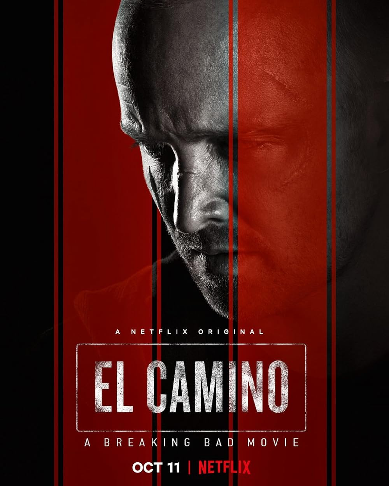
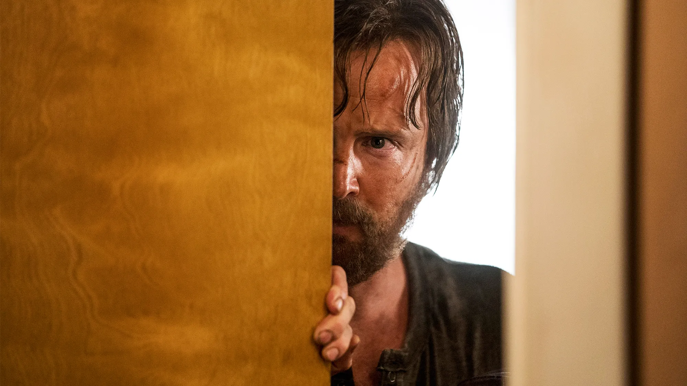
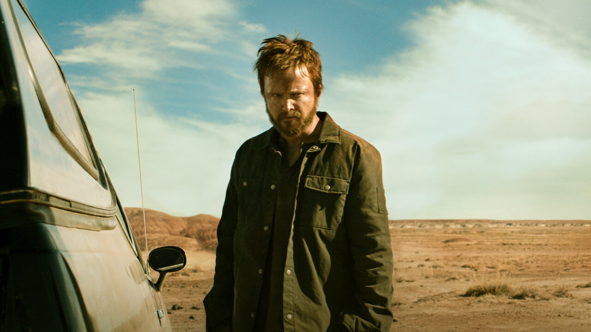

El Camino: A Breaking Bad Movie (2019)
Az El Camino a Breaking Bad televíziós sorozat közvetlen folytatása, Jesse Pinkman sorsát követve a szökése után.



A film Jesse lelki gyötrelmeit és fizikai megpróbáltatásait mutatja be, miközben új életet próbál kezdeni. Egyfajta lezárásként szolgál a Breaking Bad rajongók számára.